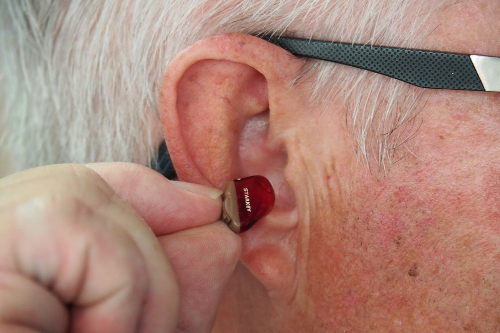

La relación de la pérdida auditiva con la demencia, los problemas de la medicina moderna y otras razones para preocuparse por su audición en este momento
28.04.2022
Hace tiempo que quería hablar sobre la disminución de la audición. La relevancia de este tema crece año tras año. Ya hay una persona con discapacidad por afección auditiva por cada 20 personas. Y eso sin mencionar los casos menos graves.
Ya, al menos el 5% de la población mundial sufre de pérdida auditiva severa. Es decir, en todo el mundo hay 20 personas con discapacidad debido a discapacidades auditivas, por no mencionar casos menos graves.
No hay nada de que sorprenderse aquí: el estilo de vida del ser humano moderno no es muy sano. Estamos rodeados por el ruido de las construcciones y reparaciones, motores y herramientas. Los jóvenes a menudo escuchan música a alto volumen con auriculares, dañando así el tejido auditivo. Sin embargo, el mayor porcentaje de personas con discapacidad auditiva son personas mayores de 45 años.

Causas de discapacidad auditiva
Primero analicemos exactamente cómo el cuerpo capta los sonidos. Esto nos permitirá comprender cuáles son los problemas con la percepción del sonido.
- Primero, la delgada membrana del tímpano captura las vibraciones y las transmite a los pequeños huesos auditivos.
- Las oscilaciones viajan profundamente, hacia el oído interno, afectando a un líquido en la estructura del oído llamado Cóclea.
- Luego se convierten en impulsos eléctricos y, a través de los nervios, van al cerebro.
- Las estructuras cerebrales las procesan y extraen información sobre la fuente del sonido y su posición en el espacio.
- Solo entonces nos damos cuenta de lo que está sucediendo. Todo el proceso toma milisegundos.
Las dificultades pueden ocurrir en casi cualquier etapa. El daño mecánico, la inflamación o el tapón de cerumen tienen un impacto igualmente grave en la audición. Las personas mayores a menudo se enfrentan a la pérdida de audición debido al envejecimiento banal de los tejidos: los capilares se deterioran y los órganos reciben sus nutrientes insuficientemente y los nervios no pueden transmitir una señal bien y rápidamente.
Una breve lista de posibles causas:
- sonidos fuertes regulares;
- lesiones en la cabeza;
- enfermedades infecciosas;
- algunos medicamentos;
- la edad;
- cáncer y neoplasias.
Por qué la pérdida auditiva es peligrosa
Muchos no se dan cuenta de lo importante que es oír bien en la vida cotidiana. No se trata solo de la forma en que se comunica, cuando es más fácil escribir un mensaje en lugar de una conversación telefónica. La audición es uno de los pilares de la actividad mental.
Impacto en la salud
La disminución de la audición es realmente peligrosa. Nos orientamos en el espacio con la ayuda de los oídos, el aparato vestibular está directamente conectado al nervio auditivo. Y la pérdida de audición puede causar interrupciones en este proceso.
Una persona puede confundirse en la carretera, por ejemplo, escuchar el aullido de una sirena, pero no entender de dónde viene y hacia dónde debe alejarse. O sentir un mareo repentino y caer.
También la percepción del sonido afecta la memoria. Para compensar los problemas de audición, el cuerpo redistribuye los recursos. De ahí los problemas de concentración, la incapacidad de captar lo principal y las brechas en la memoria.

Uno de los síntomas más frecuentes de pérdida auditiva es el tinnitus, zumbido en los oídos. Causa tensión emocional, aumenta el nivel de estrés de fondo. La exposición prolongada a la psique conduce a irritabilidad y ansiedad, agotamiento nervioso.
Las estadísticas no son reconfortantes: la disminución leve de la audición aumenta la probabilidad de demencia senil, Alzheimer y Parkinson en 2 veces, y la pérdida auditiva severa - en 5 veces.
Consecuencias sociales
No es raro que los pacientes con pérdida auditiva diagnosticada noten que la enfermedad los aleja mucho de quienes los rodean. La comunicación con una persona con dificultades auditivas requiere paciencia y comprensión: tales personas a menudo vuelven a repetir las preguntas, necesitan mantener el contacto visual con el interlocutor, etc.
Olvidan fechas importantes, no oyen algo importante, pero es que de esas pequeñas cosas se construye la comunicación. Las personas mayores son especialmente frágiles, no todas se llevan bien con la tecnología en el nivel para mantener la comunicación en las redes sociales o los mensajeros instantáneos.
La sensación de aislamiento conlleva a desarrollar depresión.
Tratamiento de la pérdida auditiva
La atención médica se refiere a los problemas de audición con una connivencia imperdonable. Solo pensemos, incluso en los países desarrollados, lo mejor que las personas pueden recibir es un audífono y un paquete de vitaminas. En realidad, la falta de un tratamiento adecuado es el principal factor en la pérdida auditiva inmediata.
Además, el uso de audífonos solo perjudica a una persona. Tomando parte del trabajo, contribuyen a la relajación, reduciendo la actividad de las estructuras auditivas. Este enfoque solo acelera la degeneración tisular.
Método alternativo de recuperación auditiva
En nuestra Universidad, se ha buscado una cura los últimos 4 años.
Estábamos buscando un remedio universal que tuviera una fórmula equilibrada en sí y que no tuviera efectos secundarios graves. Como la pérdida auditiva afecta en la mayoría de los casos a personas mayores de 45 años, necesitábamos sustancias efectivas pero lo más inofensivas posible. Es por eso que elegimos componentes naturales.
Estudios recientes han demostrado que tiene el mejor efecto.

En primer lugar, es una fuente de cannabidiol, una sustancia que tiene un efecto reparador y reafirmante en las terminaciones nerviosas. Además, es capaz de aliviar la inflamación, que sucede en el caso del deterioro de la audición debido a ototubaritis, inflamación catarral del oído medio y otras otitis.
En segundo lugar, contiene una combinación única de ácidos grasos poliinsaturados que incluyen ácidos Omega 3-6-9, gamma-linolénico, oleico y esteárico. En el complejo, eliminan casi todos los factores que causan la disminución de la audición:
- limpian y sanan los vasos y capilares para que los órganos auditivos reciban suficiente nutrición y oxígeno;
- fortalecen las membranas celulares y estimulan el metabolismo tisular para eliminar el estancamiento;
- aumentan la inmunidad, contrarrestan los efectos negativos del medio ambiente y los patógenos;
- protegen los tejidos del estrés oxidativo al unir los radicales libres y prevenir el envejecimiento de los tejidos;
- estimulan la función cognitiva, mejoran la atención y la memoria.
Además de las sustancias que eliminan las causas de la pérdida auditiva, también hemos enriquecido la composición con vitaminas y oligoelementos que tienen un efecto reafirmante. La efectividad de impresionó a los expertos de nuestro laboratorio y posteriormente se confirmó con los resultados de las pruebas.
Investigación clínica
Se seleccionaron 302 pacientes con pérdida auditiva confirmada de diverso origen para su verificación. Después, se dividieron aleatoriamente en dos grupos: uno recibió un placebo y el otro tomó .
Resultados de un ensayo aleatorizado controlado con placebo:
| Placebo | ||
|---|---|---|
| Mejora auditiva notoria | 95% | 3% |
| Mejora de la capacidad cognitiva | 87% | 5% |
| Eliminación total del tinnitus | 92% | 2% |
Los pacientes respondieron bien sobre la experiencia del medicamento: la mayoría afirmó que su calidad de vida había aumentado bastante. Es especialmente agradable que muchos hayan establecido relaciones con sus seres queridos y hayan descubierto pasatiempos intelectuales y creativos.
Dónde se puede comprar
Este remedio acaba de llegar al mercado recientemente, por lo que no está en las farmacias en este momento. Pero se puede dejar la solicitud en el sitio web oficial. El operador se pondrá en contacto con usted, le asesorará sobre todas las preguntas relacionadas con la mercancía y organizará la entrega. El paquete le será entregado dentro de una semana por correo.
Ahora se puede comprar con un gran descuento. Dese prisa, la promoción va hasta el 12.04.2022.
Les doy un consejo a mis lectores para terminar. Lo principal en el tratamiento es actuar a tiempo. Cuanto antes se hagan cargo de su salud, menor será la posibilidad de complicaciones. Cuiden su salud, la tenemos solo una.
No es la primera vez que lo pido. Primero me lo compré, y luego decidí regalarle uno a mi hermana. El efecto me impresionó mucho.
Trabajé la mitad de mi vida en una fábrica textil, a los 40 ya casi no oía nada. Recientemente me enteré del y decidí probarlo. Me ayudó, después de 2 semanas sentí la diferencia.
Ya lo he pedido, estoy esperando mi paquete.
Gracias por el artículo, me fue muy útil. Y la promoción sirve mucho, lo acabo de pedir.
Solo imaginarlo es aterrador, mucho depende de la audición. Alzheimer, demencia...
Compré hace un mes y estoy muy contenta. Recientemente pude hablar con mi hijo por teléfono, lo oía casi todo.
No creía que a mi edad se pudiera curar la audición. Resulta que lo dudé en vano. ¡ es realmente un milagro!
Hoy estuve 10 minutos sentada escuchando el canto de los pájaros, es maravilloso. ¡Muchas gracias por el consejo!
Lo compré para mi abuela, está muy contenta.
Lo entregaron en 3 días, muy rápido.
Deje sus comentarios:
Su comentario está en moderación